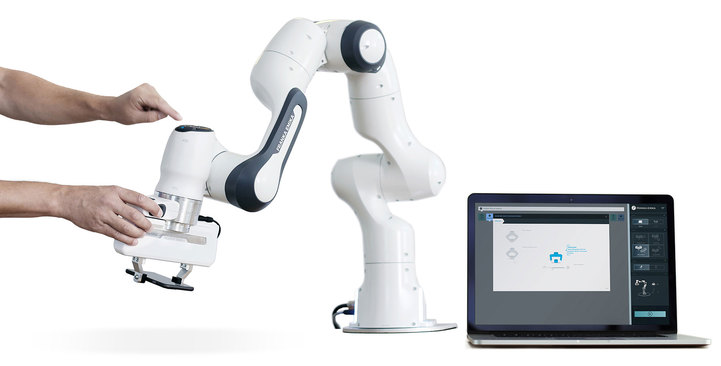
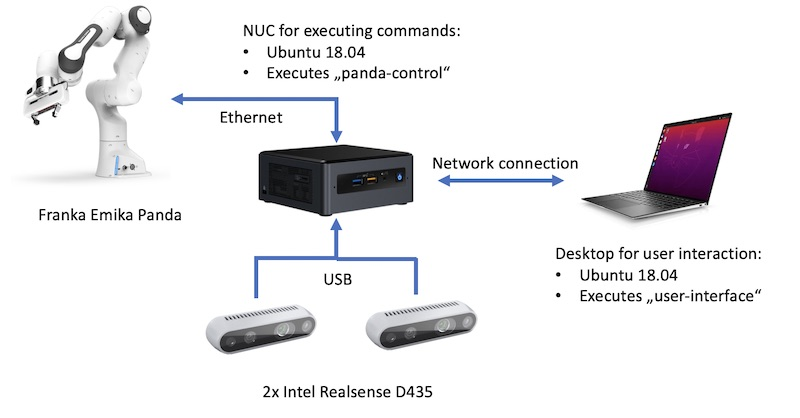

cryopreservation-panda
With this application it is possible to teach a Franka Emika Panda how to thaw biological samples.

Video
An example video is uploaded on: YouTube
System Structure

Requirements
- NUC with Ubuntu 18.04
- Franka Emika Panda connected to the NUC
- Two Intel Realsense D435 connected to the NUC
- A desktop computer with Ubuntu 18.04 in the same network as the NUC
- The 3D printed gripper model mounted on the Panda: Link
Installation
Clone the git repository to the home directory of Desktop and NUC:
cd
git clone https://github.com/TheGaertner/cryopreservation-panda
cd cryopreservation-panda
On Desktop execute:
sudo ./scripts/required_programs.sh
sudo ./scripts/install_dependecies_basic.sh
sudo ./scripts/add_deploy_command.sh
sudo ./user-interface/scripts/install_additional_dependecies.sh
On NUC execute:
sudo ./scripts/install_dependecies_basic.sh
Execution
Create Documentation
cd documentation
doxygen Doxyfile
Afterwards the documentation can be opened with:
firefox build/html/index.html
Setup
On Desktop execute:
Edit the file to your robot parameters
robot:
ip: 192.168.3.101 # Ip of the Panda
desk_username: franka
desk_password: frankaRSI
nuc:
hostname: biolab-041
ssh_username: panda
ssh_password: panda
tcp_port: 5000 # Pick a free port
udp_port: 4005 # Pick a free port
camera_0:
name: /dev/video4 # Look up the device name of the Intel Realsense
port: 6000 # Pick a free port
on: true
camera_1:
name: /dev/video10 # Look up the device name of the Intel Realsense
port: 6001 # Pick a free port
on: true
client:
udp_port: 4001 # Pick a free port
Start Software
On Desktop execute the following to push, build and run the actual code to the NUC :
You should see:
Open a new terminal on Desktop and execute:
cd user-interface
mkdir build
cd build
qmake ../userinterface.pro
make
./userinterface
A gui window should open.
Camera Calibration
Before using the camera, they have to be calibrated:
- Inside the gui choose the Misc tab.
- Click Create ChArUco Board and print it with scale 100%.
- Fix the printed paper on a solid surface.
- Point the left camera on the board and click Take Photo
- Change the position of the camera and click again Take Photo
- Repeat this step 10 times
- Now click on Calibrate. The actual calibration parameters are stored in config/camera_parameters.yaml
Teaching
Study
Process Description
Following the required steps are listed:
Part 0:
- Detect freezer
- Detect handling position 0
- Detect handling position 1
- Detect water bath
Part 1:
- Open freezer
- Open compartment
- Grab correct box
- Put box in handling position
- Close compartment
- Close freezer
Part 2:
- Open box
- Pick correct vessel
- Put it into holder
- Open water bath
- Put holder into water bath
- Close Water bath
Part 3:
- Close box
- Execute Part 1 (put box back into freezer)
Part 4:
- Open water bath
- Pull holder out of water bath
- Close water bath
Evaluation
Difficulties & Problems
ToDo
Here you can find stuff which should be fixed: ToDo
Trash
Go to this page